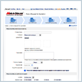
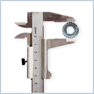

Made-in-China.com serves its members as a B2B portal and has dedicated itself to providing professional support and assistance to its clients, and connecting global buyers with Chinese suppliers.
Here are services we provide for global buyers:
-
- Premium Buyers Membership
- By applying for our Premium Membership, you can enjoy more value-added services, which lead you more success in doing business with Chinese suppliers.
-

- RFQ
- RFQ (Request for Quotation) is an online sourcing service allows buyer to get quotation directly from matched suppliers. Sourcing specialist investigates all RFQ and match suppliers according to buying request.
-
- Sourcing Events
- Tailored Match Meeting, offered by Made-in-China.com to global buyers, is a customized offline service. Any buyer who has the business trip to China and would like to see interested suppliers face to face.
-
- VIP Sourcing
- Made-in-China.com will publish the specific purchasing requests as soon as noticed by the Big Buyer. All the Chinese suppliers with satisfied products can apply for the seat to meet the big buyer, and only the ones who selected by big buyer have the opportunities to meet big buyer face to face and discuss more detailed product specification.
-

- Quality & Inspection
- Help check the quantity & quality of the goods you ordered.Save considerable trouble by identifying any problems BEFORE goods are exported.Protect your payment before transaction.